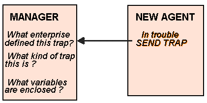

Trap
message enables
agent
to report a serious condition to a management
station. The message is send once and it is not a chorus of complains from the
device about something that is already figured out.
As previously, for the other messages, the trap message has fields identifying
the
version and the community password. Then the trap format is different and there
are
five other fields :
enterprise fields contain an
OBJECT IDENTIFIER
which name the device that sends
the trap.
generic-trap contains 7 values :
-
coldStart - the sender is reinitialising and its configuration may change
-
warmStart - the sender is reinitialising but its configuration will not change
-
linkDown - failure in one of the agent’s links
-
linkUp - one of the agent’s links has come up
-
authenticationFailure - the agent received a protocol message unproperly
authenticated
-
egpNeighborLoss - an Exterior Gateway Protocol neighbour is down
-
enterpriseSpecific - The trap is identified as not being one of the basic one
specific-trap field is used when the generic-trap value is enterpriseSpecific.
time ticks is the time since the initialisation of the entity that send the
trap.
The Enterprise specific traps can be used to define hundreds or thousands of
Enterprise-specific trap types. Those specific trap type are defined as they
are needed. The 'enterprise' that define those traps are
MIB standards group
,
vendors and corporate network management organisations. Each of them add
different new traps. MIB standard groups add technology-specific traps, vendors
add product-specific traps, and corporate groups add traps that meet their
special management needs.

Manager receiving a trap.
Trap Definition Macro
RCF
1215 defined a TRAP-TYPE macro template that helps MIB designers and
vendors to define SNMP v.1 traps. The macro give the following fields that we
can identify :
Enterprise : for the trap definition. This will point to a
MIB subtree
, or
identify the entity the trap has been designed for.
specific-trap is the number of the traps as they are defined.
you can define a list of MIB variables that will be carried in the trap
message. It can be useful in order to diagnose the problem.
a description of the trap.
optionally, it is a reference part that relates to another trap,
alarm
,
event
... anything appropriate for a MIB module.
The template of trap definition is very flexible. Vendors can choose the
variables that they need and implement a product-specific message for their
product.
The MIB definers may have forgotten to include something that a is important
for a vendor, he could then wrote a trap definition.
It is convenient to developers that they don’t need to wait for an official
upgrade of specification before fixing the oversight. The RFC 1215 gives the
right of a legal implementation of extra variable at the end of the official
variable-list. The only condition is that the variable value is accompanied by
its OBJECT IDENTIFIER, a management application will be able to understand the
additional information that has been added.